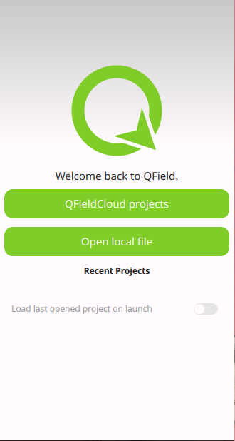

QFieldin käyttö
Kun avaat QFieldin puhelimella niin oletusnäkymä näyttää tältä:

Valitse "Avaa paikallinen tiedosto" ("Open local file") ja etsi siirtämäsi QGIS-projektitiedosto (eli .qgs päätteinen tiedosto).
Nyt voit lisätä pääkohteen. Laita ensin muokkaustila päälle ja valitse sitten pääkohteen sijainti.
Täytä sitten kentät QFieldissä. Pieni osa on pakollisia tietoja, muita voi lisätä myöhemmin, vaikkapa QGISin puolella. Tallenna lopuksi piste.

Voit lisätä pääkohteelle myös useamman alakohteen.

Pääkohteelle on mahdollista luoda aluerajauksia QFieldissä.
Geometrioiden digitointiin QFieldissä voit hyödyntää laitteen omaa paikannusta tai digitoida geometrian itse tausta-aineistojen perusteella. QFieldin kanssa on mahdollista käyttää myös ulkoista GNSS-paikanninta.